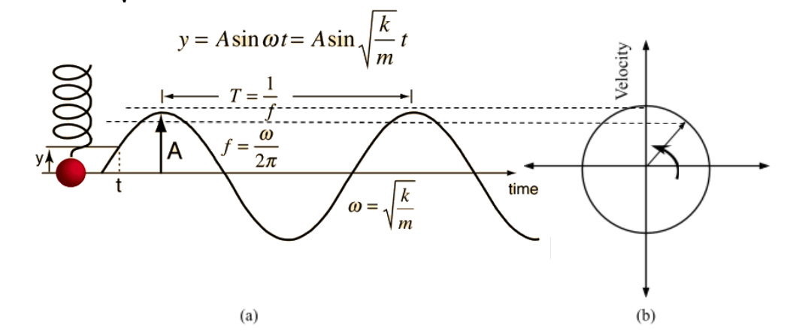

The working theory behind this experiment is Hooke’s Law, which states that,
“For relatively small deformations of an object, the displacement or size of the deformation is directly proportional to the deforming force or load.” (Encyclopædia Britannica, n.d.)
In a spring of ‘stiffness’ k (Spring Constant), on applying a force F, there is a displacement y according to Hooke’s Law –
$$F=-ky\tag{1}$$
By definition, a motion is simple harmonic if the restoring force is directly proportional to the displacement and acts in the direction opposite to that of displacement.
Hence a spring, with no damping, i.e, no loss of energy, executes SHM.
Time period (T) is given by:
$$T=\frac{2π}{ω}=2π\sqrt{\frac{m}{k}}$$
$$\begin{align*}
&\text{where,}\\
&ω\text{ = angular frequency and}\\
&m\text{ is mass of load}
\end{align*}$$
The mass of spring (ms) also influences the SHM, since each unit mass on it experiences a force due the preceding units. The equivalent mass then becomes m≈mload+ms3 (Fox & Mahanty, 1970).

Figure SEQ Figure \* ARABIC 1: Plots for a spring executing SHM (without phase difference)
(a) Position (y) vs Time (t) [Real Space]
(b) Velocity () vs Position (y) [Phase Space]
When two springs are combined in series, Total force F acting on both is the same, but the extension is the sum of extensions in each spring, i.e.
$$y=y_1+y_2=\frac{F}{k_1}+\frac{F}{k_2}$$
Thus keq is given by:
$$\frac{1}{k_{eq}}=\frac{1}{k_1}+\frac{1}{k_2}\tag{3}$$